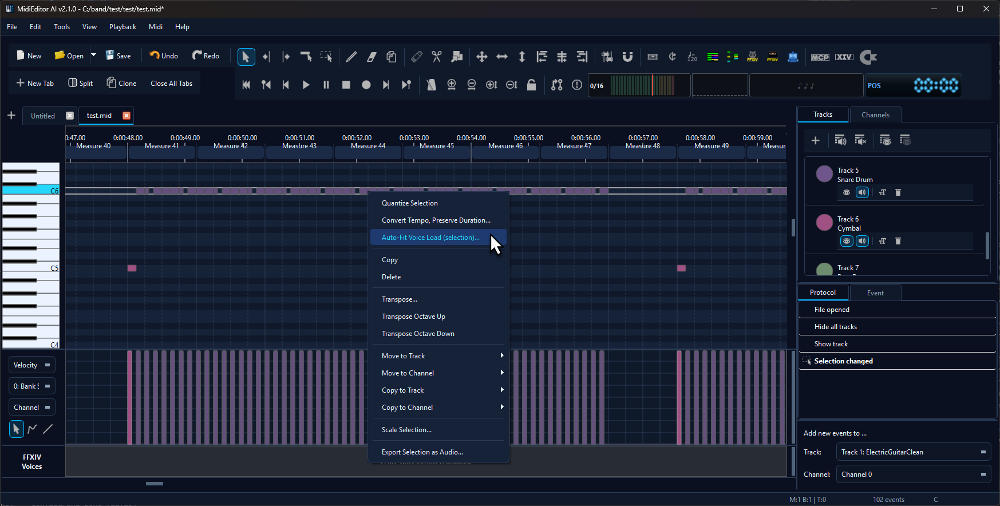
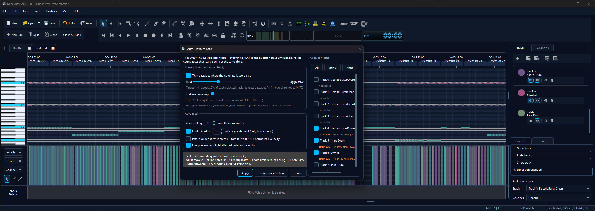
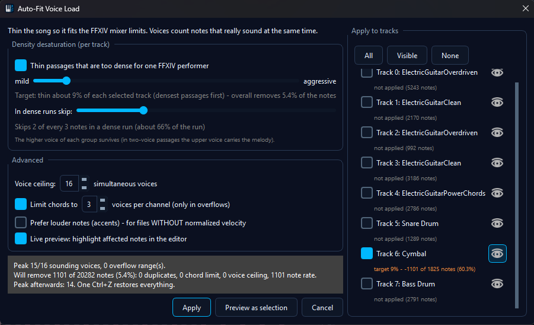

✂️ Auto-Fit Voice Load
Auto-Fit Voice Load thins out a song where too many notes sound at the same time or where a passage runs denser than an instrument can articulate. It is a note-removal tool with a plan: instead of deleting whatever sits in the way, it works through duplicates, over-wide chords, simultaneous-voice overflows and over-dense runs in that order, and it always shows you what it would remove before it touches anything.
The tool is context-driven: you point it at the whole song, at a range, or at exactly the notes you have selected, and it only ever works inside that scope. It pairs naturally with the FFXIV Voice Limiter - the limiter shows you where a file is too heavy, this tool fixes it - but it does not need FFXIV mode. Thinning a cluttered arrangement is useful in any MIDI file.
💡 Find it in: menu Tools → Auto-Fit Voice Load... for the whole song · right-click selected notes in the editor for exactly those notes · right-click the voice-load lane (FFXIV mode) for one overflow range
Three ways to open it
All three open the same dialog; they differ only in what the tool is allowed to look at and change. The scope is fixed the moment the dialog opens, and the info line at the top of the dialog names it.
| Entry point | Scope | Use it when |
|---|---|---|
| Tools → Auto-Fit Voice Load... | The whole song | You want an overall reduction and will pick the tracks in the dialog. |
| Right-click a note selection → Auto-Fit Voice Load (selection)... | Exactly the selected notes | You want to thin one passage, one voice or one hand-picked group of notes and leave everything else alone. |
| Right-click the voice-load lane → Auto-fit this overflow range | The clicked overflow range or hotspot | The limiter lane shows a red peak and you want to treat just that spot. |

The dialog
The dialog has two columns: the controls and the summary on the left, the track list with live statistics on the right. Nothing is applied while you experiment - every change re-runs a dry run and updates the numbers, and only the Apply button writes to the file.

The summary box
The dark box above the buttons is the dry run. It reports the peak number of simultaneously sounding notes against the configured ceiling, how many overflow spots exist, how many notes would be removed and why (duplicates, chord limit, voice ceiling, note rate), what percentage of the material that is, and what the peak becomes afterwards. Those numbers are the whole point of the tool: you tune the sliders until the reduction reads reasonable, and only then apply.
What it removes, and in which order
1️⃣ Duplicates
Stacked copies of the same pitch on the same channel. The longer copy survives.
2️⃣ Chord limit
Inside an overflow, chords wider than the configured limit are reduced. The lowest and highest voice of a chord always survive, so its outline stays intact.
3️⃣ Voice ceiling
If a moment still has more simultaneous notes than the ceiling allows, the shortest and quietest notes go first, inner voices before outer ones. Percussion is never thinned for voice count.
4️⃣ Density
Passages that run denser than the target are thinned by skipping notes inside the run - the automated version of halving or thirding a run by hand.
An important detail about counting: a note keeps ringing after it ends, and a display gauge that counts those ringing tails paints a much heavier picture than what actually competes for voices. Auto-Fit counts notes that really sound at the same time, so a song whose gauge looks dramatic can still be perfectly fine and is left alone.
Density: the main slider
Density is what most files actually suffer from - a cymbal wall, a fast staccato run, a tremolo figure. What counts as "too dense" is relative: a slow ride pattern and a fast shred run are both too much for one player at wildly different note rates, so an absolute notes-per-second threshold would need re-tuning for every song and tempo.
The intensity slider therefore sets a share of the material to thin, from mild to aggressive. The tool measures the density of every passage itself, ranks them, and thins the densest ones first until the requested share is reached. That means the slider always has an effect, at any tempo, on any instrument - and the label under it tells you what the current setting comes out at in real numbers.
The second slider, In dense runs skip, decides how hard a dense run is treated once it is picked: from skipping every second note (halving the run) up to keeping only one note of six. Of each group the higher note survives, which in a two-voice passage keeps the upper voice carrying the melody. If your file has meaningful velocity differences and you would rather keep the accents, tick Prefer louder notes in the Advanced group.
Percussion is treated per drum sound rather than per track, because every drum pitch is its own instrument. A dense crash pattern is thinned as a crash pattern, while a lone accent on another drum inside the same bars survives untouched. Short figures are never thinned at all, so accents and fills do not lose their shape.
The intensity slider driving the preview - the highlighted notes and the summary numbers follow every step of the drag
Working track by track
The right column lists every track with a checkbox, an eye toggle and its own statistics line.
- Checkboxes pick which tracks may lose notes. All, Visible and None set them in one click. Notes on unticked tracks still count towards voices and density - they simply never get removed. That is how you thin an overloaded cymbal track while every guitar stays exactly as it is.
- Each track keeps its own intensity. The slider adjusts the ticked tracks, and the value stays with them: tick the lead guitar and set it mild, then tick the cymbals and set them aggressive - both settings persist and Apply uses all of them together. The walkthrough clip further down shows a whole set of tracks being given individual values one after another.
- The statistics line under each track shows that track's target and how many of its notes the current settings would remove, so you can see immediately which track carries the reduction.
- The eye toggle shows and hides the track in the editor, exactly like the Tracks panel - handy because hiding tracks also changes what the voice-load lane displays.

Thinning only what you selected
This is the most precise way to use the tool. Select notes in the editor - a time range, one voice, a couple of individual clashes - then right-click the selection and choose Auto-Fit Voice Load (selection).... The dialog opens with that selection as its entire world: the statistics count only those notes, the density target applies only to them, and only they can be removed. Everything outside the selection stays exactly as it is, even where it is denser than what you are thinning.
The track list pre-ticks only the tracks your selection actually touches, so the dialog mirrors what you picked. From there the sliders behave as usual - you are simply working on a smaller piece of music.
Marking the notes, thinning them, applying - the reduction lands as one Auto-fit voice load step in the protocol, ready to be undone with a single Ctrl+Z
Live preview and the open editor
With Live preview enabled - it is on by default - the notes that would be removed are highlighted as the editor selection while you tune, so you can see the actual notes rather than just a count.
That highlight replaces whatever was selected in the editor, and it does so again on every change. Two situations where you may prefer to turn Live preview off: when you want to keep your own selection visible while tuning, and on very large files where recomputing the highlight after every step of a slider drag feels sluggish. With it off, the Preview as selection button shows the affected notes once, on demand - that is what the button is for. While live preview is on it has nothing left to do, because the highlight is already up to date.
The dialog does not block the editor. Scroll, zoom and browse the timeline while it is open, compare two views side by side, or toggle track visibility - the preview recomputes itself after every edit, so what is highlighted always matches the current settings. In FFXIV mode the voice-load lane joins in: the full load is drawn in grey and the predicted result on top of it in colour, which turns the lane into a before/after picture of your settings.
The longer walkthrough: browsing the song with the dialog open, the lane redrawing its grey total against the coloured prediction, and each track keeping the density it was given - tick one track, set its value, move on to the next, and every setting is still there when you apply
Advanced options
| Option | What it does |
|---|---|
| Voice ceiling | How many notes may sound at the same time. In FFXIV mode the default matches the in-game limit; raise it if you only care about the density pass. |
| Limit chords to N voices per channel | Caps chord width inside overflow spots, keeping the outer voices. Untick it to leave chord shapes completely alone. |
| Prefer louder notes (accents) | Keeps the loudest note of a group instead of the higher one. Meant for raw files whose velocities still carry accents; in files with normalised velocity it makes no difference. |
| Live preview | Highlights the affected notes in the editor while you tune. Turn it off to keep your own selection visible, then use Preview as selection to look at the affected notes when you want to - see Live preview and the open editor. |
Applying, undo, and repeatability
- Apply is the only thing that changes the file, and the whole reduction is a single undo step - one Ctrl+Z brings every note back.
- The result is deterministic: the same file with the same settings always produces the same removals, so you can undo, adjust one slider and re-apply to compare.
- Applying twice keeps thinning - the second pass measures the already thinned material. If you want a different result, undo first instead of stacking passes.
- If you change the track structure while the dialog is open (adding, removing or reordering tracks), the dialog closes itself - its track list belongs to the arrangement it was opened on. Just open it again.
With and without FFXIV mode
The tool is available in both cases; the difference is context and wording.
| FFXIV Voice Limiter active | Any other MIDI work | |
|---|---|---|
| Dialog wording | Speaks in FFXIV terms - mixer limits, one performer per track. | Neutral wording about simultaneous notes and dense passages. |
| Voice-load lane | Visible, and mirrors the preview as a grey/coloured before-after curve. | Not shown; the dialog's own numbers carry the information. |
| Lane entry point | Right-click an overflow range or hotspot to scope the tool to it. | Use the Tools menu or a note selection. |
Letting the AI do it
MidiPilot can run the same thinning through the auto_fit_voice_load tool, with the
same options the dialog offers. It defaults to a dry run: the agent reports what would be removed
and asks for your confirmation before the real pass, which is again a single undo step. Combined
with the read-only analyze_voice_load tool the agent can find the heavy spots first
and then propose a reduction - see MidiPilot and the
Voice Limiter's AI tools.
Tips
- Start with a selection. A small, well-chosen selection tells you more about the tool than a whole-song pass, and it is trivial to undo.
- One problem at a time. If cymbals are the issue, tick only that track. Spreading a reduction across everything is rarely what a song needs.
- Watch the summary, not the slider. The percentage in the summary box is the honest number - the slider is a target, and short figures are deliberately protected.
- Use side-by-side views. Open the same file in two panes and keep one at the original state while you thin the other; the modeless dialog lets you compare while tuning.
- Run it after the structural tools. Splitting drums or fixing channels changes what shares a track, so thin the arrangement once it has its final shape - see FFXIV Drum Split and Fix X|V Channels.
Related
- FFXIV Voice Limiter - the gauge and lane that show where a file is too heavy
- FFXIV Drum Split - split a GM drum kit into playable percussion tracks
- Fix X|V Channels - set up channels and tracks for an in-game performance
- Editing MIDI Files - selections, tools and the editor basics this tool builds on
- MidiPilot - running the same reduction through the AI